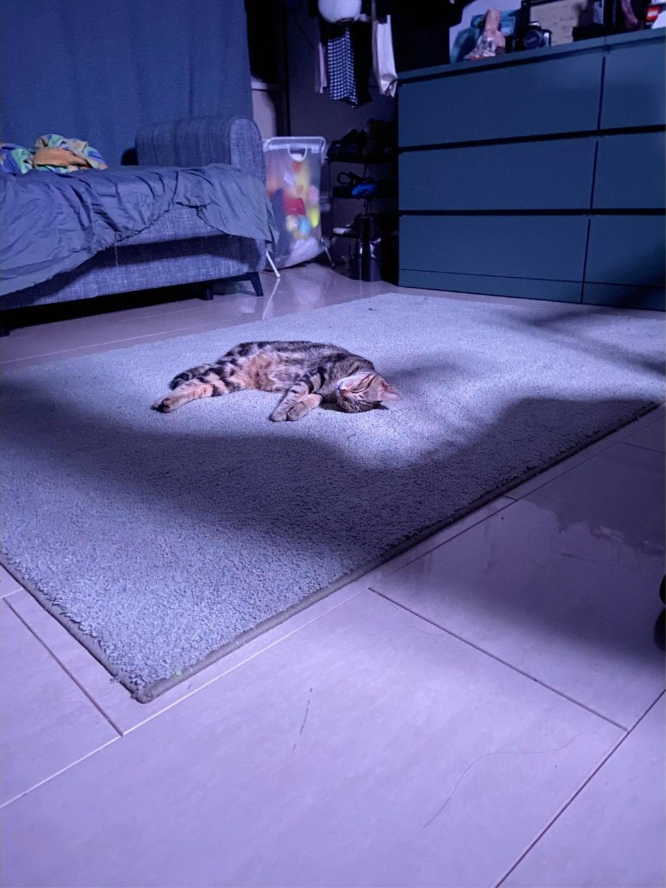
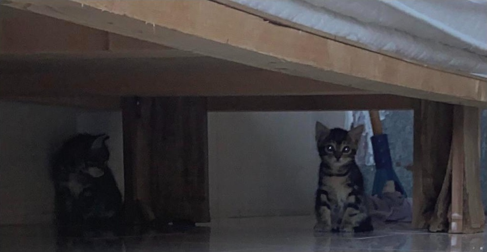

Cat of the Month
Meet this month's cover cat
Meet TayTay: naps between the sheets, a hunter's heart, and a scratch mark on every sofa.


01 The interview
TayTay's story
She was born on 17 April 2023. Her mother was a cat we adopted back in 2022 named Fiona, RIP. Her father went to buy milk and never came back, as I've been told.
The resemblance to her mother can be seen in her eyes, but not in her energy: Tay is known as a spirited, energetic cat, and some would say she may have Bengal genes in her. She's a great hunter, as she hunts for fun and brings us her trophies (my own mother doesn't appreciate this gesture, as she cleans up the aftermath).
She gave birth to Shadow, Rory, Oscar, Jack and Finn. Tay is named after the well-known singer Taylor Swift.
May she live a fulfilling life, as she fills mine with inspiration to such simplicity.
Cat stats
- Name
- TayTay (Tay, after Taylor Swift)
- Age
- 3 years (born 17 April 2023)
- Best nap spot
- Between the sheets, cozied up
- Favourite toy
- Feet
- Secret talent
- Leaving scratch marks on every sofa
- Mum
- Fiona, RIP
- Kittens
- Shadow, Rory, Oscar, Jack and Finn
May she live a fulfilling life, as she fills mine with inspiration to such simplicity.
02 The photo shoot

